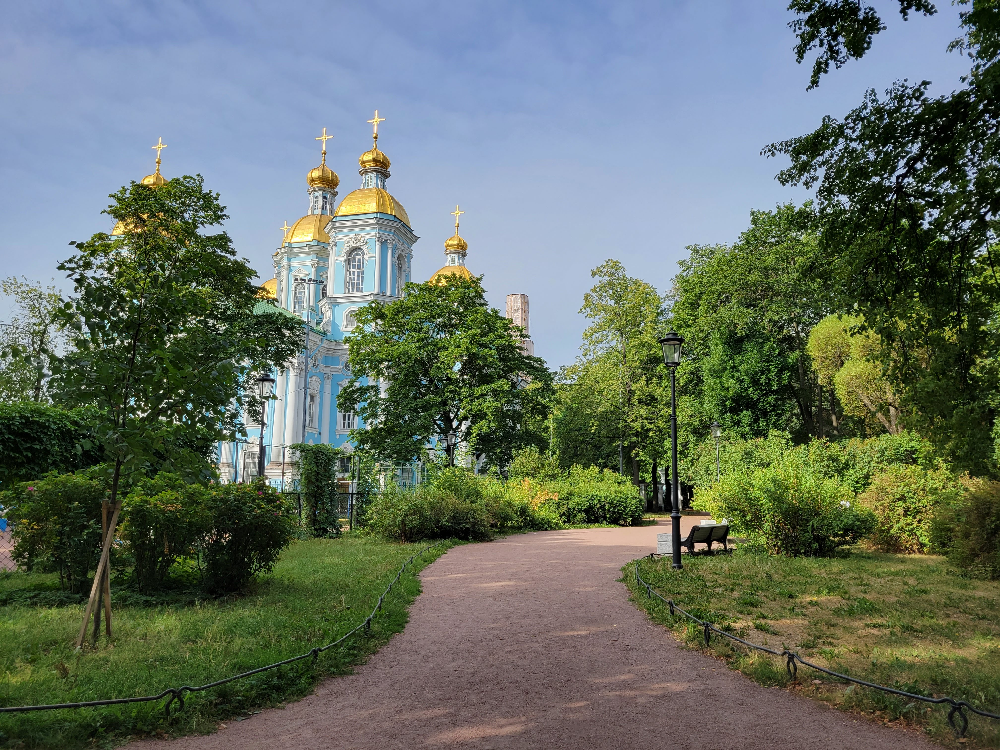
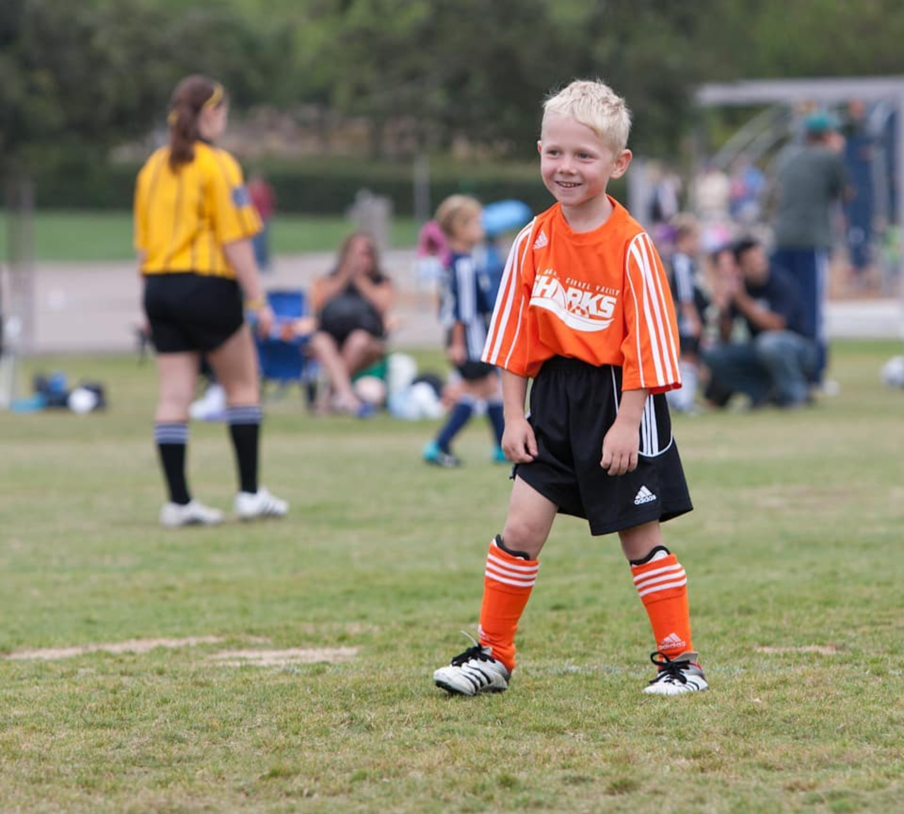
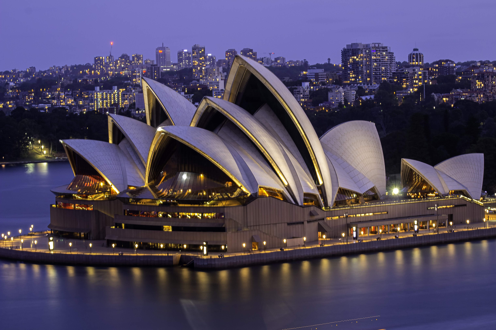

I have a dual citizenship with Russia and the United States. I have visited Russia 3 times and
I've been to the cities Moscow, Vladimir, Suzdal, St. Petersburg. Moscow is my most frequently
visited city, with about 2 months of staying total in Moscow.
The main reason I got so into sports was because my Dad often completed half (and full) Ironmans,
so he introduced me to running and biking at a really young age.
My family traveled a lot, which is why I love to travel now. We've been to many of the states,
as well as a few countries including Russia, England, Canada, and Australia. After gaining a
love for photography, all I wanted to do when I went places was take photos. My second trip to
Russia, during the winter, was full of photo taking, as well as my trip to Australia.
The derivation of "eggnog" actually comes from my last name "Egorov". In the american version
of the last name, the first syllable is pronunced just like the word "egg". A friend of mine
decided to call me eggnog from then on due to that fact. It's actually pronounced slightly
different in Russian because my parents americanized it when they immigrated,
The last name technically starts with a Y, "Yegorov".
I grew up as a first generation American from parents that immigrated from Russia. Due to this, my family enjoyed travelling a lot to explore places, and take us to Russia to meet family and explore the places they grew up. I know a fair amount of Russian and can speak a little bit, but I am not fluent. Because my parents grew up in a place like Russia, they really enjoyed winter time and skiing, so they made sure to introduce that life to us kids as well, which has resulted in my love for winter and snowboarding. I learned to ski at a really young age (around 3 or 4) and after a few years I got bored of it and decided to switch to snowboarding at around 8 years old. Not only did we grow up in the snow, because of our Russian parents, we also went to the beach a lot because we grew up right next to it. We swam all the time and played in the sand a lot, and learned to boogie board.
We also grew up as a sport oriented family, each of my siblings, including myself, all played soccer and we loved it. I also really enjoyed running and I did 5ks all the time with my Dad and brother. I would also go biking casually with my Dad along the 56 freeway. Later, I combined my love for swimming, biking, and running, and began to do triathlons. It was a really tough sport but it was a lot of fun to be able to do the three things I love all at once. In the summer just before 7th grade, I had broken my leg playing soccer. I was unable to do any of the sports I loved, for about 2 years: biking, running, swimming, and soccer. When I fully recovered, I went back into soccer but I played a lot more casually and just played for fun, but over the years I got bored of it and stopped playing entirely.
My interests started to evolve from more active things to less physically active things. I took art oriented classes at school such as drawing and design, as well as photography. I grew a love for photography and even got my own camera so I could take photos of the places that I went to, such as Australia, or Russia. I also really enjoyed editing the photos to make them look even better, it was a really fun and rewarding process just to have a photo I really liked, not even for selling purposes. My family later suggested that I try coding, because of my love for typing and keyboards. I decided to try it out and I taught myself how to program in Python, and I even took a class at MiraCosta Community College about Python Programming. I am now taking computer science classes at High School, and I plan on going to a university to continue my study of computer sciences.